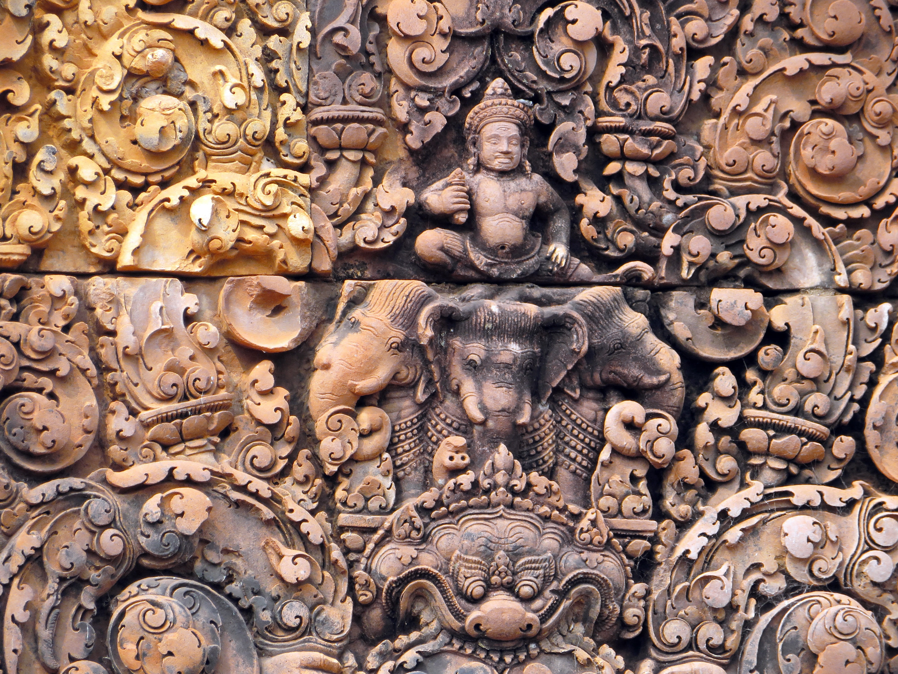
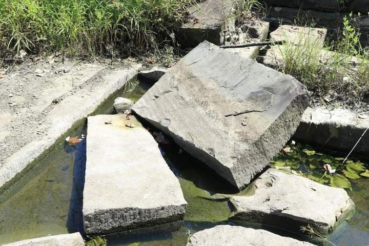

 ប្រាសាទបន្ទាយស្រី ស្ថិតនៅក្នុងភូមិបន្ទាយស្រី ឃុំបន្ទាយស្រី ស្រុកបន្ទាយស្រី ខេត្តសៀមរាប ដែលចម្ងាយប្រមាណ ៣៩គីឡូម៉ែត្រភាគខាងជើងទីរួមខេត្តសៀមរាប ឃ្លាតពីស្រះស្រង់ ២៧គីឡូម៉ែត្រនិងមានចំងាយ៣២គីឡូម៉ែត្រពីប្រាសាទអង្គរវត្តតាមផ្លូវឆ្ពោះទៅ ភ្នំគូលេន ។ប្រាសាទបន្ទាយស្រីគឺជាប្រាង្គប្រាសាទមួយក្នុងចំណោមប្រាសាទជាច្រើននៅ ខេត្តសៀមរាប អង្គរដ៏ល្បីល្បាញនៅក្នុង ប្រទេសកម្ពុជា ក៏ដូចជានៅលើ ពិភពលោកដែរ ដែលបានទាក់ទាញភ្ញៀវទេសចរជាតិ និងអន្តរជាតិយ៉ាងច្រើនកុះករមកពីតំបន់ជាច្រើន។ ក្រុមភ្ញៀវទេសចរដែលបានទៅទស្សនាប្រាង្គ ប្រាសាទអង្គរវត្ត និងប្រាសាទដទៃទៀតនៅក្នុងទឹកដីនៃ ខេត្តសៀមរាប តែងតែឆ្លៀតចំណាយពេល ធ្វើដំណើរក្នុងរយៈចម្ងាយដ៏ឆ្ងាយពីទីរួមខេត្ត ។
ប្រាសាទបន្ទាយស្រី ស្ថិតនៅក្នុងភូមិបន្ទាយស្រី ឃុំបន្ទាយស្រី ស្រុកបន្ទាយស្រី ខេត្តសៀមរាប ដែលចម្ងាយប្រមាណ ៣៩គីឡូម៉ែត្រភាគខាងជើងទីរួមខេត្តសៀមរាប ឃ្លាតពីស្រះស្រង់ ២៧គីឡូម៉ែត្រនិងមានចំងាយ៣២គីឡូម៉ែត្រពីប្រាសាទអង្គរវត្តតាមផ្លូវឆ្ពោះទៅ ភ្នំគូលេន ។ប្រាសាទបន្ទាយស្រីគឺជាប្រាង្គប្រាសាទមួយក្នុងចំណោមប្រាសាទជាច្រើននៅ ខេត្តសៀមរាប អង្គរដ៏ល្បីល្បាញនៅក្នុង ប្រទេសកម្ពុជា ក៏ដូចជានៅលើ ពិភពលោកដែរ ដែលបានទាក់ទាញភ្ញៀវទេសចរជាតិ និងអន្តរជាតិយ៉ាងច្រើនកុះករមកពីតំបន់ជាច្រើន។ ក្រុមភ្ញៀវទេសចរដែលបានទៅទស្សនាប្រាង្គ ប្រាសាទអង្គរវត្ត និងប្រាសាទដទៃទៀតនៅក្នុងទឹកដីនៃ ខេត្តសៀមរាប តែងតែឆ្លៀតចំណាយពេល ធ្វើដំណើរក្នុងរយៈចម្ងាយដ៏ឆ្ងាយពីទីរួមខេត្ត ។
ប្រាសាទបន្ទាយស្រីមានឈ្មោះល្បី ព្រោះវាត្រូវបានសាងសង់ឡើងពី ថ្មផ្កាឈូកជាមួយ នឹងក្បាច់ចម្លាក់ យ៉ាងល្អិតឆ្មាររស់រវើកជាងគេ ដោយមានតួប្រាង្គបី ដែលមានសភាពល្អឆើតឆាយដូចស្រីគ្រប់លក្ខណ៍។ ប្រាសាទនេះសង់លើដីរាបស្មើមានរាងតូចច្រឡឹងដោយថ្មភក់ផ្កាឈូក និង ឥដ្ឋរាង៤ជ្រុងទ្រវែង ហើយមានគូទឹកព័ទ្ធជុំវិញ ប្រាង្គទាំងបីនៃ ប្រាសាទសង់បែរមុខទៅទិសខាងកើត ហើយប្រាង្គកណ្តាលមានតម្កល់ លិង្គព្រះឥសូរ ខាងត្បូងឧទ្ទិសថ្វាយដល់ព្រហ្មញ្ញសាសនា និងខាងជើងឧទ្ទិសថ្វាយដល់ព្រះវិស្ណុ។ ប្រាសាទបន្ទាយស្រីកាលដើមឡើយមានឈ្មោះថា "ឥសូរបុរៈ" ប្រែថា "បុរីនៃឥសូរ" ប៉ុនែ្តសម័យក្រោយៗមកទៀតគេហៅថា ប្រាសាទបន្ទាយស្រី ទៅវិញដោយសារតែរាងតូចច្រឡឹង និងក្បូរក្បាច់រចនាដ៏ស្រស់ស្អាត និងរស់រវើកនៅ លើផ្ទាំងថ្មពណ៌ផ្កាឈូក។ មិនត្រឹមតែប៉ុណ្ណោះ ប្រាសាទនេះបានទទួលការកោតសរសើរពីភ្ញៀវទេសចរសឹងគ្រប់រូបថា ពិតជាស្រស់ស្អាត ទោះបីមានបរិវេណតូចចង្អៀត បន្តិចមែនតែទ្រង់ទ្រាយ ប្រាសាទលំអទៅដោយចម្លាក់ផ្កាភ្ញី នៃរឿងរ៉ាវដែលទាក់ទងទៅនឹងលទ្ធិទេវរាជ "រឿងរាមកេរ្តិ៏ខែ្មរ" មិនត្រឹមតែប៉ុណ្ណោះចម្លាក់នីមួយៗ សុទ្ធតែមានលក្ខណៈរស់រវើកបើប្រៀបធៀបទៅ នឹងប្រាសាទដទៃ។តាមឯកសារប្រវត្តិសាស្រ្តអាណាចក្រខ្មែរបានកត់ត្រាថា ប្រាសាទបន្ទាយស្រីបានកសាងឡើងក្នុងគ្រិស្តសករាជ ៩៦៧ ក្នុងរជកាលព្រះបាទរាជេន្ទ្រវរ្ម័នទី២គឺមុនការកសាងប្រាសាទអង្គរវត្តនិងអង្គរធំ ដោយព្រហ្មណ៍ម្នាក់ឈ្មោះ យជ្ញវរាហៈ ដែលជាព្រះគូ្ររបស់ព្រះបាទជ័យវរ្ម័នទី៥ ដើម្បីឧទ្ទិសដល់ព្រហ្មញ្ញសាសនា ។ ប្រាសាទបន្ទាយស្រីធ្វើពីថ្មភក់ពណ៌ស៊ីជម្ពូ និងរំលេចដោយទេពអប្សរាចំនួន១៥០០ (អ្ហេ៎អ្នកអាន! ចេះតែជឿដែរឬ? ទៅមើលប្រាសាទហ្នឹងខ្លួនឯងទៅ កុំឱ្យគេបោកបាន) ដែលទេពអប្សរទាំងអស់សុទ្ធតែខុសគ្នា ហើយលើសពីនេះសិលាចារឹក ផ្កាភ្ញីនៅប្រាសាទបន្ទាយស្រីមានក្បាច់ល្អលើសពីក្បាច់ចម្លាក់នៅលើ ប្រាសាទអង្គរវត្តទៅទៀតគឺដូចជាក្បាច់ដែលបានឆ្លាក់លើប្រាក់លើ ស្ពាន់ដូច្នេះដែរ ។ បើតាមមគ្គុទេសក៏វិញបញ្ជាក់ថា ព្រះបាទជ័យវរ្ម័នទី៥ ទ្រង់ជាអ្នកកសាងប្រាសាទនេះដែលតាមសិលាចារឹថា "ឥសូរបុរៈ" ឈ្មោះត្រីភុវតមហេស្វរៈប្រែថា "ស្ពាននព្រះឥសូរជាធំត្រៃភព" ប្រែថា "បុរីព្រះឥសូរ" មិនមែនឈ្មោះបន្ទាយស្រីដូចយើងស្គាល់ទេ ។ ប្រាសាទនេះមានកំពែងថ្មបាយក្រៀមព័ទ្ធ៣ជាន់មានទីលានក្រាលថ្មវែងទៅ ទិសខាងកើត មានគោបុរៈប្រកបដោយក្បាច់វិចិត្រ នៅចំកណ្តាលទីលានមានរោងទងខ្វាត់ខ្វែងក្រឡាចត្រង្គចេញទៅខាង ជើងមួយ ចេញទៅខាងត្បូងបីសុទ្ធសឹងប្រកបដោយក្បាច់រចនាល្អវិចិត្រ ។ សព្វថ្ងៃនេះបាក់ធ្លាក់អស់ហើយសល់តែសរសរច្រូងច្រាងគួរអោយស្តាយ ។ ប្រាសាទបន្ទាយស្រីជាប្រាសាទមួយដែលមានក្បាច់រចនាយ៉ាងបញ្ចង់ឆើត ឆាយ មានសន្ទឹកភ្ញីវល្លិវិលវង់ល្អិតឆ្មាស្រស់រស់រវីក ដែលមើលទៅគួរអោយនឹកគិតឥតមានក្តីង្ស័យថា " ទេវតានិមិ្មត " ។ សន្លឹកក្បាច់មួយទងៗដែលវិលវង់មូលក្រឡង់អាចទាញភ្នែកគយគន់មើល ម្តងហើយម្តងទៀតនិងអោយឈរទ្រឹងភាំងភ្លេចខ្លួនជញ្ជក់មាត់ដោយ សេចក្តីស្ងើចថ្វីដៃសម្តែងអោយឃើញថា សម័យកសាងប្រាសាទបន្ទាយស្រីនេះជាសម័យនៃការចេះដឹងស្ទាត់ជំនាញ របស់បុព្វបុរស់ខ្មែរនាសម័យនោះ ។ ប្រាសាទបន្ទាយស្រីកន្លងមកត្រូវរងនូវភាពមហន្តរាយ ដោយសារតែសង្គ្រាមបានធ្វើអោយប្រាសាទបុរាណមួយនេះខូចខាតខ្ទេច ខ្ទីអស់យ៉ាងច្រើន ។ របងកំពែងការពារខាងក្រៅត្រូវបានគេធ្វើការជីកគាស់កាយរុករក វត្ថុបុរាណកាលពីអំឡុងប្រទេសស្ថិតនៅក្នុងសង្គ្រាម ។ គំនរដុំថ្មប្រាសាទត្រូវទុករាយប៉ាយនៅមុខប្រាសាទ ។ តួប្រាសាទខាងក្នុងមួយភាគត្រូវបាក់បែកស្រុតទ្រុឌដែលមើលទៅគួរអោយសង្វេគ ។
 ប្រាសាទបន្ទាយស្រីមានឈ្មោះថាត្រីភូវនមហេស្វរៈ ដែលមានន័យថាម្ចាស់នៃលោកទាំងបី ស្ថាបនាឡើងក្នុងឆ្នាំ៩៦៧នៃគ្រិស្តសករាជក្នុងព្រះបាទរាជេន្ទ្រវរ្ម័នទី២(៩៤៤-១០០១) តាមសិលាចារឹកលេខ K-៨៤២ នាចុងសតវត្សរ៍ទី១០។ តាមរយៈសិលាចារឹកសេកតាទុយបានសរសេរថា ក្សត្រិយព្រាហ្មណ៍នេះឈ្មោះ យជ្ញវរាហៈ ប្រកបដោយចំនេះដឹងខ្ពស់ខាងវិទ្យាសាស្រ្ត ទទួលមុខងារជាសាស្រ្តាចារ្យខាងសិវនិយម និងជារាជគ្រូទីមួយនៃព្រះមហាក្សត្រ។
ប្រាសាទបន្ទាយស្រីមានឈ្មោះថាត្រីភូវនមហេស្វរៈ ដែលមានន័យថាម្ចាស់នៃលោកទាំងបី ស្ថាបនាឡើងក្នុងឆ្នាំ៩៦៧នៃគ្រិស្តសករាជក្នុងព្រះបាទរាជេន្ទ្រវរ្ម័នទី២(៩៤៤-១០០១) តាមសិលាចារឹកលេខ K-៨៤២ នាចុងសតវត្សរ៍ទី១០។ តាមរយៈសិលាចារឹកសេកតាទុយបានសរសេរថា ក្សត្រិយព្រាហ្មណ៍នេះឈ្មោះ យជ្ញវរាហៈ ប្រកបដោយចំនេះដឹងខ្ពស់ខាងវិទ្យាសាស្រ្ត ទទួលមុខងារជាសាស្រ្តាចារ្យខាងសិវនិយម និងជារាជគ្រូទីមួយនៃព្រះមហាក្សត្រ។
សំណង់នានានៃប្រាសាទបន្ទាយស្រីរាយគ្នាសងខាងបន្ទាត់ទ្រូងមួយរត់ជួរកើតទៅលិច ហើយអាចបែកចែកជាពីរផ្នែក។ ទី១ផ្តើមចេញពីខ្លោងទ្វារចុងខាងកើត ដែលមានផ្លូវមួយប្រវែងរហូតដល់ទៅ ៦៧ម៉ែត្រចេញពីនោះមក។ ផ្លុវដើរនេះអមដោយថែវរហូតដល់ចុងខាងលិច ទើបមានអាគារលាតប្រវែងសន្ទឹងទទឹងទៅម្ខាងៗ។ នៅសង់ខាងផ្លូវដដែល តែដាច់ចេញថែវបន្តិចមានអាគារលាតទទឹងដែរគឺមួយនៅខាងជើងផ្លូវ បីទៀតនៅខាងត្បូង។ ដើរតាមនេះមកតាមខ្លោងទ្វារនៃធ្លាទី៣ភ្លាម គឺយើងចេញមកផ្នែកទីពីរនៃប្រាសាទទាំងមូលហើយ។ ផ្នែកនេះមានទំហំ៩៥ម៉ែត្រគុណនឹង១១០ម៉ែត្រ ហើយចែកចេញជារួត តៗគ្នាពីក្រៅទៅក្នុង។ ក្នុងបរិវេណទី៣នេះមានកសិណទឹកព័ទ្ធមួយជុំសិន ទើបមកដល់ធ្លាទី២ ដែលមានទំហំ៣៨ម៉ែត្រគុណ៤២មែត្រ។ ឯកំពែងទី១(រាប់ពីខាងក្នុង)រាងបួនជ្រុងស្មើមួយជ្រុងៗប្រវែង២៣.៥០ម៉ែត្រ។ កំពែងនីមួយៗមានខ្លោងទ្វារនៅចំកណ្តាល ខាងកើតនិងខាងលិច។ ធ្លាទី២មានសំណង់បន្ទាប់បន្សំជាខ្រើន ព្រមទាំងសំណង់ផ្សេងៗទៀតអំពីឈើ ដែលសព្វថ្ងៃបាត់បង់អស់ហើយ។ ធ្លាក្នុងបង្អស់ក៏ដូចគ្នាដែរ។ ក្នុងនោះមានតួប៉មកណ្តាលបីសាងនៅលើខឿនជាមួយគ្នា៩៥ម៉ែត្រ។ នៅកណ្តាលមានតួប៉មមួយកម្ពស់៩.៨០ម៉ែត្រ ដែលមានយ៉មួយជាមណ្ឌបលយចេញមកខាងមុខ និងហោត្រៃបែរទៅទិសខាងលិចនៅសងខាងមុខក្រុមប៉មទាំងបី។
បន្ទាយស្រីជាឈ្មោះនៃរចនាបថប្រាសាទមួយ ដែលជួនកាលគេភ្ជាប់ទៅនឹងរចនាបថប្រែរូបផងដែរ ព្រោះរចនាបថទាំងពីរនេះស្ថិតនៅក្នុងសម័យកាលប្រហាក់ប្រហែលគ្នា តែយ៉ាងណារចនាបថបន្ទាយស្រីមានលក្ខណៈពិសេសលើសគេនៅត្រង់ក្បាច់លម្អនោះ គេសម្រេចចិត្តដាក់ឈ្មោះតែឯងនោះទៅ។ មានប្រាសាទតិចតួចណាស់ ដែលគេបញ្ចូលក្នុងរចនាបថបន្ទាយស្រី។ ទាំងអស់មានប្រាំ ហើយសុទ្ធតែនៅក្នុងខេត្តសៀមរាបមានដូចជា ប្រាសាទស្រឡៅ ប្រាសាទត្រពាំងខ្យង ប្រាសាទសេកតាទុយ និងប្រាសាទតូចមួយដែលគេចាត់ទុកក្នុងរចនាបថបន្ទាយស្រី ស្ថិតនៅខាងកើតប្រាសាទឃ្លាំងខាងជើង និងតួប៉មកណ្តាលប្រាសាទតុបខាងលិច ដែលប្រាសាទទាំងពីរស្ថិតនៅក្នុងរាជធានីអង្គរធំ។ មានតែប្រាសាទក្រោយនេះទេ ដែលសង់អំពីថ្មភក់ ប្រាសាទឯទៀតសង់អំពីឥដ្ធដោយមានផ្តែរ និងគ្រឿងលម្អឯទៀតឆ្លាក់លើថ្មភក់ជាធម្មតា ហើយដែលខ្លះទៀតគេយកមកដាក់តាំងនៅសារមន្ទីរនានា។
ដើម្បីពិនិត្យឱ្យយល់អំពីស្ថានភាពក្រុមBSCPរៀបចំកម្មវិធីកំណាយជាលក្ខណៈទ្រង់ទ្រាយធំមួយតាមបុរាណវិទ្យា។ ក្រៅពីទិន្នន័យបានមកពីស្ថានភាពគ្រឹះប៉មនានា និងអំពីប្រព័ន្ធបង្ហូរទឹក ហើយដែលធ្វើឱ្យយល់មូលហេតុនៃការទ្រុឌទ្រោមនោះគេបានប្រទះឃើញវត្ថុព្រមទាំងស្លាកស្នាមបុរាណជាច្រើនទៀត។ ពេលរើកម្រាលទីធ្លាខាងក្នុងគេប្រទះឃើញរន្ធបង្គោលឬសសសរមួយចំនួន បង្ហាញថាពីមុនមកមានអាគារអំពីឈើបន្ថែមលើសំណង់ថ្មនៃប្រាសាទនេះ។ មើលទៅប្រហែលអាគារឈើនេះ សម្រាប់បម្រើការបូជា តែនេះគ្រាន់តែជាការស្មាននៅឡើយ។ កម្រាលថ្មនៅធ្លាខាងក្នុងស្រុតដោយកន្លែងធ្វើឱ្យគេឃើញវត្ថិថ្មីទៀត ដែលកាលពីពេលឆ្ការព្រៃស្តារប្រាសាទ ព្រមទាំងពេលជួសជុលក្រោយមកនោះ ពុំបានប្រទះដូចជាថ្មចម្លាក់ទាំងដុំៗ បំណែកចម្លាក់ខ្លះ ចម្លាក់សម្រាប់បញ្ចាំងប៉ម និងក្បាលរូបឆ្មាំប្រាផ្នែកដំបូលតាំងពីដើមរៀងមក ដំបូលប៉ម និងហោត្រៃតែងតែសងដោយតម្រៀបថ្ម ឬឥដ្ធលាយគ្នាលយចេញពីមួយទៅមួយឡើងទៅលើ។ យូរបន្តិចទាល់តែមកដល់ចុងសតវត្សរ៍ទី១០ ទើបបច្ចេកទេសនេះរាលដាលយកមកសង់ជាដំបូលរោងទងនានា ដែលមានកំណើតមកពីពេលនោះមក។ បច្ចេកទេសដំបូលនេះមានលក្ខណៈងាយស្រួល តែពុំសូវសុក្រឹតទេ កាលណាដំបូលនោះធំរាងកោងរាងមូលពាក់កណ្តាល។ កាលសម័យមុនអង្គរ ដោយសារតួប៉មច្រើនតែជាឥដ្ធ ដំបូលប្រើបច្ចេកទេសនេះក៏ជាឥដ្ធ តែនៅសម័យអង្គរគេនិយមថ្មភក់ឃើញថាប្រាសាទបន្ទាយស្រី ក៏ដូចសំណង់ឯទៀតនៅក្នុងរជ្ជកាលព្រះបាទរាជេន្ទ្រវរ្ម័នដែរ បានងាកមករកឥដ្ឋវិញ។ ប្រាសាទបន្ទាយស្រីហាក់មានការដ្ឋានពិសោធន៍មួយនៅសម័យនោះ ត្បិតរបៀបធ្វើដំបូលដែលខ្មែរអនុវត្តន៍ទាំងប៉ុន្មានមាននៅទីនោះ។ អគារទ្រវែង និងថែវសុទ្ធតែមានគ្រោងឈើ និងប្រក់ក្បឿងដែលមេជាងស្គាល់ជាទូទៅធម្មតា។ បើហោត្រៃទាំងពីរ ព្រមទាំងយ៉ប៉មទាំងកណ្តាលវិញប្រក់ឥដ្ធតាមរបៀបលយចេញពីក្រោមទៅលើដូចបាននិយាយពីមុន។ រីឯក្រុមប៉មកណ្តាល ខ្លោងទ្វារខាងកើតទី១ យ៉ខ្លោងទ្វារខ្លះនៅកំពែងទី២គឺប្រក់របៀបលយលើគ្នាដែរ តែវត្ថុធាតុជាថ្មភក់។ ចាប់ពីខ្មែរចាបកាន់ព្រះពុទ្ធសាសនាថេរវាទរវាងសតវត្សរ៍ទី១៤មក របៀបប្រក់ថ្មនេះក៏ត្រូវបានបោះបង់ចោលទៅ ហើយគេក៏និយមប្រើគ្រោងដំបូលឈើប្រក់ក្បឿងវិញ ព្រោះគេអាចធ្វើដំបូលធំគ្រប់ដណ្តប់លើអគារដែលមានលំហទូលំទូលាយសម្រាប់មនុស្សមកធ្ចើបុណ្យបូជាព្រះពុទ្ធអង្គបាន។
ជាប្រពៃណីរៀងមក ស្ថាបត្យករខ្មែរពូកែការជាងឈើមិនថាគ្រឿងគ្រោង ឬគ្រឿងបិទបាំងនោះទេ។ លំណៅទូទៅ រាប់បញ្ចូលទាំងព្រះរាជវាំងផងសង់អំពីឈើទាំងអស់មានន័យសំណង់ទាំងឡាយជាឈើ ប៉ុន្តែគ្មានអ្វីមួយនៅសល់មកដល់យើងឡើយ។ សំណង់ថ្មឆ្លុះបញ្ចាំងប្រពៃណីស្ថាបត្យកម្មឈើនេះឯង។ ធ្លាប់ផ្គុំឈើរបៀបណាក៏យករបៀបដដែលមកអនុវត្ថន៍លើថ្ម។ រហូតដល់សតវត្សរ៍ទី១២គ្រោងទ្វារបង្អួចផ្គុំគ្នាតាមបង្គុំឈើ ដែលមានមុំ៤៥អង្សាយកមកញាតបញ្ចូលគ្នា។ សសរ និងចម្រឹងជើងទៀននៃបង្អួចសុទ្ធសឹងយកមកបញ្ចូលបន្ទះថ្មមេ ដោយប្រើដំណាប់ញីឈ្មោល។ ជើងទៀនទាំងនេះសុទ្ធសឹងក្រឡឹងមិនខុសពីចម្រឹងទ្វារជើងទៀនឈើឡើយ។ សូម្បីតែគ្រឿងក្នុងក៏ឥទ្ធិពលឈើជះមកលើថ្មដែរ។ ប្រាសាទបន្ទាយស្រី ដែលសាងឡើងនៃផ្នែកទី២នៃសតវត្សរ៍ទី១០នេះឆ្លុះបញ្ចាំងឃើញច្បាស់ណាស់ អំពីការអនុវត្ថន៍ទាំថស្រុងនៃបច្ចេកទេសឈើទៅលើថ្ម ក្រោយមកនៅសម័យបាយ័ននាចុងសតវត្សរ៍ទី១២គេបោះបង់ការចម្លងនេះច្រើន ដើម្បីចំណេញ ត្បិតកម្មវិធីសាង់សង់នៃព្រះបាទជ័យវរ្ម័នទី៧ធំធេងណាស់។
 ថ្មភក់ប្រើនៅតំបន់អង្គរ គេយកមកពីជើងភ្នំគូលែនដែលស្ថិតនៅរវាងប្រមាណ ៣០គីឡូម៉ែត្រពីឧទ្យានបុរាណ។ គេឃើញមានកន្លែងយកថ្មផ្សេងៗ ជាអាទិ៍នៅខាងជើងប្រាសាទបេងមាលា។ គេមានប្រទះឃើញខ្លះដែរ កន្លែងមានថ្មពណ៌ផ្កាឈូកនេះ តែមានសមាសភាពលម្អិតនៃថ្មនោះមិនដូចថ្មនៅបន្ទាយស្រីឡើយ។ ខ្ពង់រាបជួរភ្នំគូលែននៅមានស្រទាបផ្នែកខាងលើ មានថ្មពណ៌ផ្កាឈូកកម្រាស់ប្រមាណ ២០ម៉ែត្រ។ ថ្មនេះហើយ ដែលគេយកមកសាង់សង់ប្រាសាទបន្ទាយស្រីគឺមានទីទាំងស្ថិតនៅក្បែរភ្នំដី ដែលមានទីតាំងស្ថិតនៅក្បែរប្រាសាទបន្ទាយស្រីនេះ គេប្រទះឃើញអន្លុងជម្រៅប្រមាណ ១០ម៉ែត្រនៅក្បែរជើងភ្នំដីពោលមានចម្ងាយប្រមាណ ៣គីឡូម៉ែត្រពីប្រាសាទបន្ទាយស្រី ចំណែកថ្មបាយក្រៀមក៏បានយកពីទីតាំងក្បែរនោះផងដែរ។
test